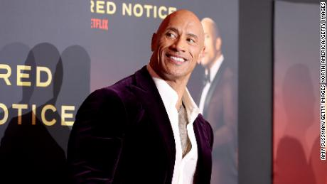
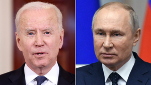
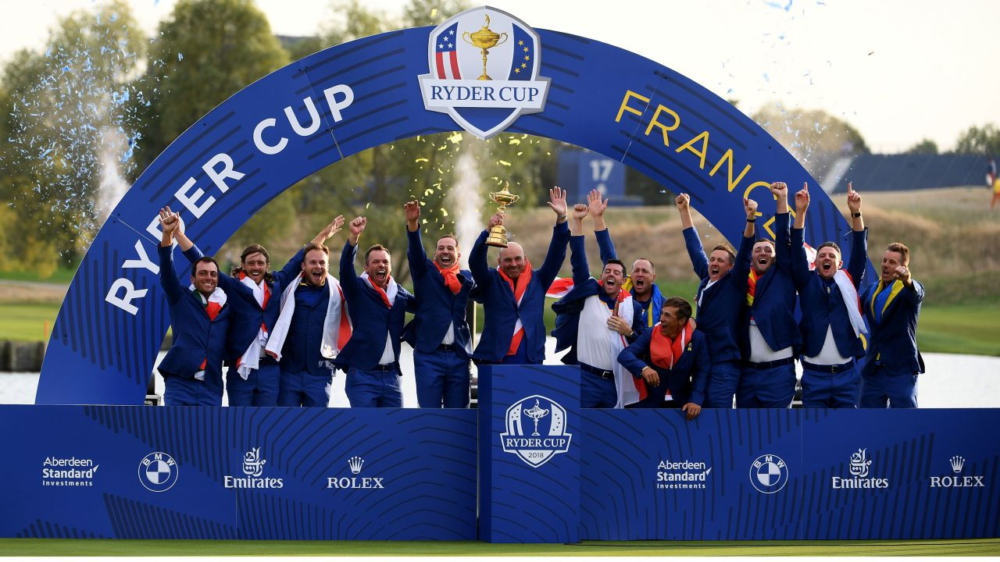
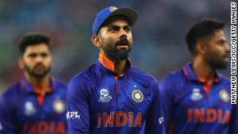

TIMES OF INDIA 
International NEWS
Dwayne 'The Rock' Johnson calls out Vin Diesel's 'manipulation'
He produced and starred in two hit films, "Jungle Cruise" and "Red Notice," debuted his biographical sitcom "Young Rock," saw unprecedented sales growth with his Teremana tequila, and became the most followed American man on Instagram with 285 million followers.
A statue of Cristiano Ronaldo is dividing opinion again. This time it's in India
Unveiled in Goa, the statue of the Portuguese star was commissioned to inspire young people's love of football, according to a state minister."For the love of football and at the request of our youth, we put up Cristiano Ronaldo's statue in the park to inspire our youngsters to take football to greater heights," said Michael Lobo, the Goa state minister behind the statue's unveiling.
Tracking Covid-19 vaccinations worldwide

At least 218 countries and territories have administered more than 9 billion doses of a Covid-19 vaccine, barely a year after the first Covid-19 case was reported in China. Several different vaccines have been developed at record speed, in large part due to years of research on related viruses and billions of dollars in investment.
'Harry Potter: Return to Hogwarts' takes a magic-filled trip down memory lane
HBO Max has developed a fondness for reunions after that awkward "Friends" gathering and "The West Wing" voting special. Yet "Harry Potter 20th Anniversary: Return to Hogwarts" strikes just the right balance, looking back at the cinematic franchise with warmth and humor, while delicately capturing the impact on kids raised on a movie set over a formative decade.Perhaps foremost, this 100-odd-minute documentary -- shrewdly divided into four chapters, each encompassing two movies -- makes terrific use of clips and outtakes to illustrate its anecdotes and remembrances.
January 6 panel stands down on request for some Trump documents
The White House said some of the records the House asked for potentially could concern state secrets or executive privilege because they were part of high-level national security deliberations, according to a letter from the White House counsel's office released Tuesday. The House said it would "defer" its e records.
Another set of the documents that the House dropped pursuing may not have been all that helpful anyway because while they were created on dates the committee asked for, they did not pertain to the panel's investigation, the White House letter said. As a result, the committee won't be getting hundreds of pages of National Security Council records at this time.
The revelation comes in a new round of letters is about the status of Trump-era documents held by the National Archives. It's the first time the Biden administration appears to have pushed back on more than a handful of pages of documents requested by the House select committee, as the National Archives works through thousands Trump administration.
The White House made clear in its have the is improved it's still supportive of the House's inquiry on January 6, and that the latest deal over documents shouldn't "compromise its ability to complete its critical investigation expeditiously."The curtailing of the House panel's request will likely not affect its core mission of understanding then-President Donald Trump's 2020 at the US Capitol on January 6.
4 numbers that explain the wild market in 2021
the statue of the Portuguese to inspire young people's love of football, according to a state minister."For the love of football and at the request of our youth, we put up Cristiano Ronaldo's statue in the park to inspire our youngsters to take football to greater heights," said Michael Lobo, the Goa state minister behind the statue's unveiling.
Biden pushes Putin for Ukraine de-escalation in second call this month
President Joe Biden urged his Russian counterpart, Vladimir Putin, on Thursday to take steps to ease an unremitting crisis on Russia's border with Ukraine, warning again of dire economic consequences should Putin proceed with an invasion.
The 50-minute phone call did not yield any major breakthroughs, US and Russian officials said afterward, but did establish the tenor for upcoming in-person diplomatic talks between the two sides.
At least 218 countries and territories have administered more than 9 billion doses of a Covid-19 vaccine, barely a year after the first Covid-19 case was reported in China. Several different vaccines have been developed at record speed, in large part due to years of research on related viruses and billions of dollars in investment.
Manchester City juggernaut looks destined to make another procession of Premier League title race
Typically, the New Year is welcomed with the promise of hope and change, yet the Premier League title race looks set to run an increasingly familiar course -- Manchester City winning at a canter.
One game past the halfway mark, Pep Guardiola's side command an eight and nine point lead over chasers Chelsea and Liverpool respectively -- a not insurmountable climb, but one that looks increasingly daunting with each passing game.
One game past the halfway mark, Pep Guardiola's side command an eight and nine point lead over chasers Chelsea and Liverpool respectively -- a not insurmountable climb, but one that looks increasingly daunting with each passing game.
President Joe Biden urged his Russian counterpart, Vladimir Putin, on Thursday to take steps to ease an unremitting crisis on Russia's border with Ukraine, warning again of dire economic consequences should Putin proceed with an invasion.
The 50-minute phone call did not yield any major breakthroughs, US and Russian officials said afterward, but did establish the tenor for upcoming in-person diplomatic talks between the two sides.
At least 218 countries and territories have administered more than 9 billion doses of a Covid-19 vaccine, barely a year after the first Covid-19 case was reported in China. Several different vaccines have been developed at record speed, in large part due to years of research on related viruses and billions of dollars in investment.
India cricket captain Virat Kohli slams 'spineless' trolls after social media abuse targeting team's bowle
India cricket captain Virat Kohli has criticized the "spineless people on social media" who attacked the team's bowler Mohammed Shami over his religion following the team's loss to Pakistan in a T20 World Cup match. "To me, attacking someone over their religion is the most pathetic thing that a human being can do," Kohli told reporters in a press conference Saturday, ahead of India's Sunday match against New Zealand. "Everyone has the right to voice their opinion and what they feel about a certain situation, but I personally have never ever even thought of discriminating anyone over their religion -- and that is a very sacred and a personal thing to every human being, and that should be left there," he added. "Everyone has the right to voice their opinion and what they feel about a certain situation, but I personally have never ever even thought of discriminating anyone over their religion -- and that is a very sacred and a personal thing to every human being, and that should be left there," he added. Despite hateful comments on Shami's social media telling him to leave India and go to Pakistan, many Indian fans as well as national media the statue of the Portuguese to inspire young people's love of football, according to a state minister."For the love of football and at the request of our youth, we put up Cristiano Ronaldo's statue in the park to inspire our youngsters to take football to greater heights," said Michael Lobo, the Goa state minister behind the statue's unveiling.